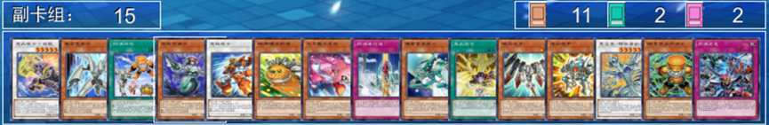
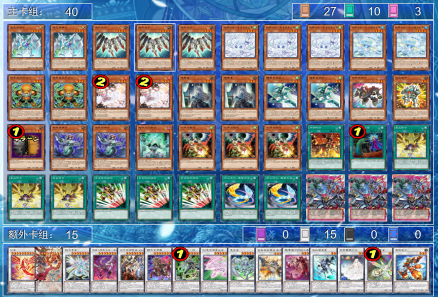
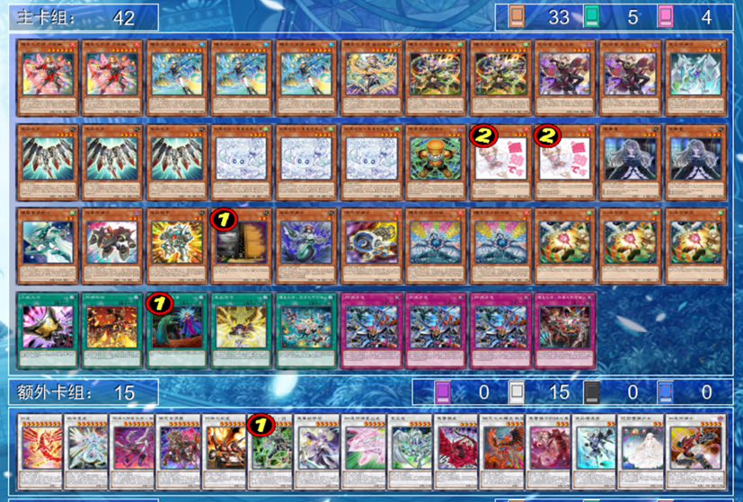
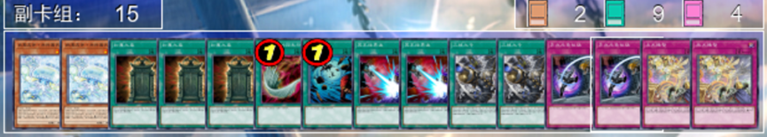
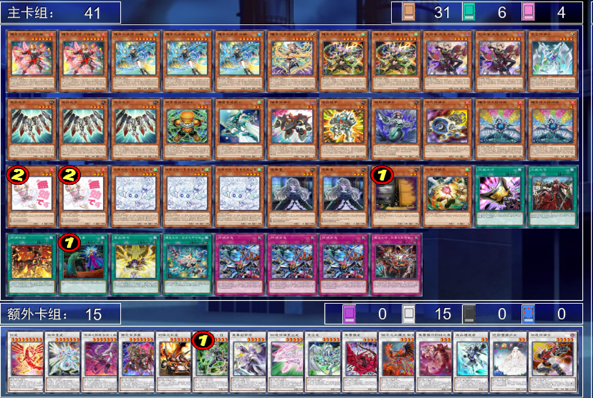
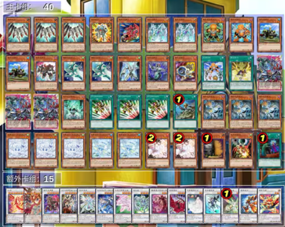

0. 前言
我是dRcLoD，一个默默无闻的牌手。今天这篇文章，是来分享我从LOCH之后到4月表前对废品进行迭代的心路历程。同时也是给一些想要了解废品的朋友参考的小文章。网上有关废品的大学习已经有不少优秀的了，所以我来做一个小学习。
第一次写文章，势必有很多地方不如人意。还望各位大佬多多包涵。
1. 对于补强卡的讨论
从SD48到截稿（2026.3.29），废品一共得到了15张卡的补强（爆裂体不算）。

虽然我们经常调侃废品的补强是"真卡战队"，但是客观而言，大多数补强的卡片确实为废品解决了一些问题。在讨论解决了什么问题之前，我们先来看看，SD48之前的废品卡组有什么问题？
身为一个同调卡组，缺少优质的非调整点（同调士卡池里面非调整的量本身就少，能用的基本没有）。因此补强前刚需使用系统外的轴进行同调，比如经典的勇者超重同调士卡组。
身为同调卡组，调整点同样不够优质（因为增速，卡组内刚需多种不同星级的同调士。但是除了极少数卡，同调士作为一个调整的功能性极其低下。所有的同调士上手基本都需要NS下去才能处理掉。）
本家展开极其依赖增速通过（这个只要稍微见过废品卡组的都能明白，虽然有不依赖增速的展开路线，但是这类路线刚需3+卡以上的展开。实战中很难结算。）
接下来我们再来看看SD48为我们补充了什么：
首先为废品卡组提供了可以进入构筑的非调整。音速战士和全速战士他们都可以帮助我们一卡启动。后面给的废品大王和铠甲更是优质的本家陀螺组件。看一个星尘龙就能跳下来还能补调整和非调整。这些都让废品可以仅靠本家打到增速。
接下来提供了一些比较优质的调整。这里就不得不提及我认为SD48最强的卡片——废铁同调士，以及和他配套的废铁战士。这两张卡最大的意义就是让同调士上手不再是废件。拥有了算是本家的运转卡。同时年盒的星废品同调士作为本家66b也是一张不错的补点。
另外一张很厉害的卡就是废品信号。它的效果可以视作本家E紧急+护航。进可护航增速，退可特殊情况下解放场上的无用场值转化为同调士。
还有一张比较特殊的卡需要单独提及，就是同调紧急。这张卡可能有的朋友觉得这张卡既不能被本家检索到（他没有办法通过决斗者创世纪和三战之号以外的方法方便的检索上手），结算还难（需要对面特招额外才能从卡组拽出来同调士），并不是一张值得携带的卡。但是在我看来，大多数废品卡组都是需要下满这张卡的。因为它可以提供相当重要的对手回合二速动作。因为本身就需要携带多种星级的同调士怪兽，所以相比于大多数外挂陷阱的卡组（杀手这种规则手卡同调除外），废品对于陷阱结算的成功率会更高。哪怕最后也无法在对面回合结算，陷阱保底也会为我们提供一个场值和一次加速同调，为我们后攻突破提供机会。
2. 纯轴还是混轴？

因为15张卡的补强，让废品成为了一个可以玩且强度不低的卡组。接下来就到了经典的问题：我们应该组纯轴的废品还是混轴的废品。就我个人而言，我更期待去玩纯轴废品。
纯轴废品的优点有很多：
卡组结构十分健康，有着15+的系统外以及大量的优质随动（紧急瞬间移动，废品信号等等）卡组废件基本没有，已经是一个优质的结构了。可以带调和的天救龙（版本答案！）和小丑与锁鸟（废品可以做到自锁）。
但是这个构筑在我玩了一个星期不到就被我否决了。原因如下：
展开路线过于单一且不够扎实。在这套构筑中，通常只有两种的展开路线：一种是2+1同调召唤废铁战士，废铁战士找到星废品同调士，去做到一个虹光护航增速的场面。另一种是大王找铠甲凑出传统的4+1进行裸出增速的场面。
对找到KEY卡的要求极高。纯轴一旦做不到增速，他就很容易做不出很多东西，大多数时候只能是单虹光过。
依旧无法接受同调士大量上手。虽然说同调士已经不是完全不能接受上手的卡了，但是同调士复数上手依旧是无法接受的手卡。
对G类手坑的抗性奇差。虽然可以依靠自锁进行躲避，但是锁鸟只有三张，无法保证对手丢出各种G的时候你的手中都会有锁鸟。不然就只能做个虹光过了，虹光妥协很明显是不够看的。
有的人可以说了，废品不是可以去携带调和的天救龙吗？只要带上三张天救龙大人，一切都会好起来的。天救龙这张卡虽然是一张强力的手坑，但是他对刚才提到的问题并没有做出回答。诚然，跳出天救龙堆马龙确实是一个强力的动作，但是跳下来之后呢？他并不能帮助你展开，7星调整在废品系统内是很难消化掉的场值。基本只能靠信号把他转化成本家参与展开。因此我认为，天救龙在废品卡组里，不能帮助我们解决上面问题中的任何一个，只能增加我们后攻的胜率。
当这个时候，我们发现，如果想解决这些问题，纯轴已经到达了他的极限，那么我们就需要找到一个轴来辅助他的展开，这个轴需要有以下的特点：可以提供优质的非调整和调整且没有本家紫苏；可以提供增速以外的展开路线，让无法增速的情况下也有办法做出对应的阻抗；拥有对各种手坑尤其是G类手坑的一定抗性。
3. 我的最终答案

上图便是我最终得到的构筑。42卡构筑，拥有着15+的系统外投入量。卡组结构也算合理。
首先我是降低了耀圣的投入量，这样可以减少耀圣复数上手的可能性。特别是无垢者，在我看来他的优先级相当之低，不是一个优质的动点。（我在SIDE局也经常踢掉他）他虽然可以打的很大，但是他单NS下来吃坑没有配合卡很难做出很好的阻抗。耀圣的红因为单开吃锁会很难受，也被我踢掉了一张。
其次，我投入了爆裂体小轴，具体投入为一张黑翼的祭祀，一张音速战士。同时我们把混轴构筑中常用的革命同调士替换成了星废品同调士。这样我们耀圣多了一条展开路线就是6+1做大鸟，大鸟拉墓地1，7+1做祭祀，祭祀丢手拉卡组音速战士，音速战士找星废品同调士，星废品同调士拉墓地1起跳。这一条路线浑然天成。不亏手。还能让耀圣转增的需求大大降低，基本上凑齐7星就可以直达增速。同时我们也发现，在之前的混轴构筑中用处不大的信号，因为这三张卡的投入也拥有了展开的可能性。这个是最核心的改动，这让我们的展开前所未有的顺滑。不过不用担心扔掉革命导致的场值减少。接下来我们将在CB介绍环节详细介绍。
有的朋友可能会好奇为什么我们会携带喷气同步士和废铁同步士。其实最初的构筑中我携带了两张废铁同步士，但是这样会让同调紧急的动作变成一个纯粹的炸场（因为耀圣的投入，使得大多数时候紧急的结算目标是6+1），如果投入喷气，我们可以C1花龙C2喷气检索大王。这样会让同调紧急这个动作变得十分危险。我觉得为了这一点投入喷气是值得的。
4. combo介绍
说真的本来不打算讲combo的，因为废品的本质是同调均卡卡组，是一个没有固定CB的卡组。这样的均卡卡组本身便不适合讲太多的CB。尤其是增后的CB，增后的CB根据自己对环境的选择可以是千变万化的。比如你既可以选择轰炸机烧血8K进行FTK，也可以选择做PSY三叉削5手。这些东西都没有定式的。但是一个卡组小学习不讲CB又有点不太对。因此这里我只给出我的常用的一些CB。
耀圣开（以耀圣红为例）：
红跳中间，效果找风诗，风诗吃红特招到中心，卡组拉小鸡，小鸡点风诗上升3，9+1做鲜花女男爵（不要放在中间）。C1小鸡检索蓝，C2风诗回手。蓝跳中间，效果贴绿阵。绿阵特招黄，黄贴红阵，这里有两个展开路线，一个是红阵丢手怪特招小鸡，6+1同调召唤耀圣7，耀圣7拉墓地1降低全场3星，4+1做加速同步士，加速堆墓3星降低3星变2星，3+2做增速。另一个是红阵吃场上的耀圣拉墓地小鸡，6+1同调召唤耀圣7，耀圣7拉墓地1不降星，7+1做黑翼祭祀，黑翼祭祀丢手特招音速，音速找星废品同调士，星废品同调士拉墓地小鸡起跳，8+1可以做任意9星白（这里我选择携带的是机龙，有什么用看后面的CB）2+3做到增速。
单增速开（以大王拉废铁为例）：
大王展示星尘龙特招，效果找铠甲，铠甲特招解放自己拉废铁，4+1做增速。增速拉4321。4找废品信号。5+1做蔷薇6堆墓蔷薇少女，6+2做加速同调星尘龙拉墓地2，8+2同调鲜花。蔷薇少女除外特招加速同步星尘龙，加速同步星尘龙效果解放自己特招原版星尘龙8+4同调召唤红龙。红龙C1检索同步鸣动，C2墓地强袭除外自己特招加速星尘龙。红龙点鲜花变身深渊神兽。丢手特招墓地喷气，8+1做机龙，机龙除外一个调整点自己炸了，C1机龙回收强袭，C2蔷薇6特招。6+2=8同调召唤PSY，PSY削手，深渊兽拉回来，再削一次，鸣动苏生墓地星尘龙，星尘同步士吃星废品起跳，8+4同调红龙，盖放信号回合结束。
对手回合，红龙点自己的10特招救世星龙。终场为鲜花1康+深渊神兽1次怪兽康+3次救世星龙康+炸全场（救世星龙没有卡名一回合一次，红龙拉下来康一次，强袭除外拉回来再康一次，废品信号还能再拉一次）
单增速自锁：
大王展示星尘龙特招，效果找铠甲，这里中锁。铠甲特招解放自己拉废铁，4+1做增速。增速拉4321。5+1做蔷薇6堆墓蔷薇少女，6+2做加速同调星尘龙拉墓地2，8+2同调鲜花。蔷薇少女除外特招加速同步星尘龙，加速同步星尘龙效果解放自己特招原版星尘龙8+4同调召唤红龙。墓地强袭除外自己特招加速星尘龙。红龙点鲜花变身深渊神兽。丢手特招墓地喷气，8+1做机龙，机龙除外一个调整点自己炸了，C1机龙回收强袭，C2蔷薇6特招。6+2=8同调召唤PSY，PSY削手，深渊兽拉回来，星尘同步士吃星废品起跳，8+4同调红龙。
对手回合，红龙点自己10特招救世星龙。终场为鲜花1康+深渊神兽1次怪兽康+2次救世星龙康+炸全场
上面便是基本combo，剩下的combo需要实战中根据实际情况自行推导。换句话说就是菜就多练。CB也可以不像我这么打，就像前面说的，废品本身便是一个没有固定CB的卡组。只要确定了终端导向，剩下的便是练习了。
5. side选择
我对SIDE的理解并不深，就不写那么多长篇大论误导大伙了。这里贴出来仅供大家参考，还需要根据当地的环境自由选择。

6. 4月表后的构筑初探
4月表对我们最大的影响就是少了两张和本家系统极其切合的手坑锁鸟。使得我们对G的防范手段进一步减少。我个人目前的想法是加入一张三战之号，这样可以吃G盖放陷阱去打一段。实际怎么携带还得等表后的实战。
纯轴的话，我个人对纯轴废品的研究并不多，因此我们在这里展示游忄的构筑。他携带了同调伙伴轴作为补点弥补了初动的问题，还携带了两张蒸汽同调士和车轮同调士用来加强陷阱的动作。同时也可以通过蒸汽进行对G的妥协：假设场地开吃鸟，我们可以找音速战士，再用音速战士去找蒸汽。对面回合叫蒸汽加速增速拉蒸汽2号和其他四个兄弟，蒸汽二号加速加速同步星尘龙，加速同步星尘龙解放自己加速同调召唤B2B。B2B还可以喊加速同调密码大师等。


7. 一些碎碎念
SD48的补强，再次掀起了一波废品的研究热度。各路大师的开发百花齐放。梦回1201废品补强的时候。无论是游忄的白森百夫长废品，还是rescue的巳剑废品，甚至还有携带白阿的烙印废品和携带味美喵的哈吉废。在这里我不想讨论这些构筑的强弱，但是每天都可以冒出各种各样的思路，社区的讨论氛围也很好。
从废品同步士发售到现在，废品卡组已经走过了10余年的时光，仍然有着蓬勃的生命力。甚至能在饼图中偷一偷上位。
我之前曾经被朋友开玩笑的问过一个问题：废二为什么不能出红爹。一开始我笑笑没当回事，后来我在想，这话其实是有一定道理的。当然不是要废品真的出红爹，而是说废品其实不必要拘泥于一个思路。在我刚入坑的时候，我还抄过一个卡组，B站现在也能搜索到，叫能调流天的老艾，主卡除了老艾的头没有一张效果怪兽，战术就是不断滤抽去过牌抽老艾或者同调做出流天类星龙。当时这个思路震惊到我了。而这也是我喜欢废品的原因：总会有不同的思路出现让人感慨"原来还能这么玩"。
希望废品还能在环境中活跃到下一个十年吧。
感谢忘了送给我同调士卡。感谢群友雨雨雨1，翻斗花园第一天杯龙，沐，fjzjk1，猫条和我讨论。感谢游忄，MY，rescue，罗夏，长白山亲王等废品宗师对废品卡组的开发。感谢本地牌店的朋友陪我练牌。
dRcLoD
2026.3.30凌晨记